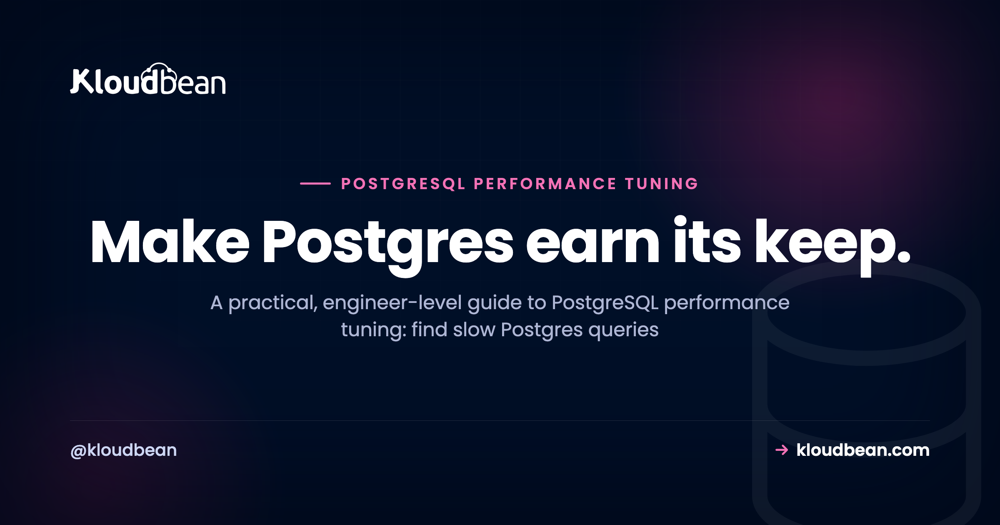
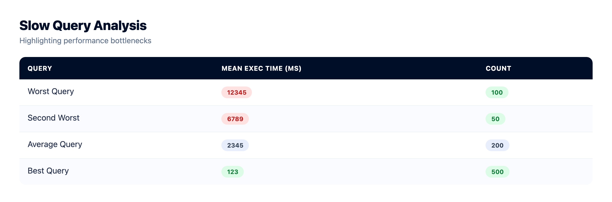
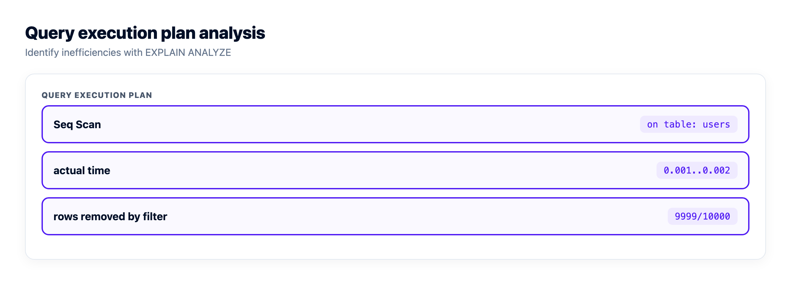
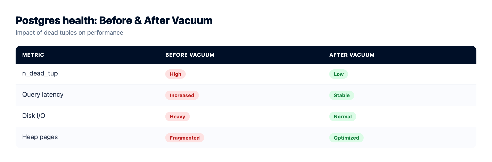
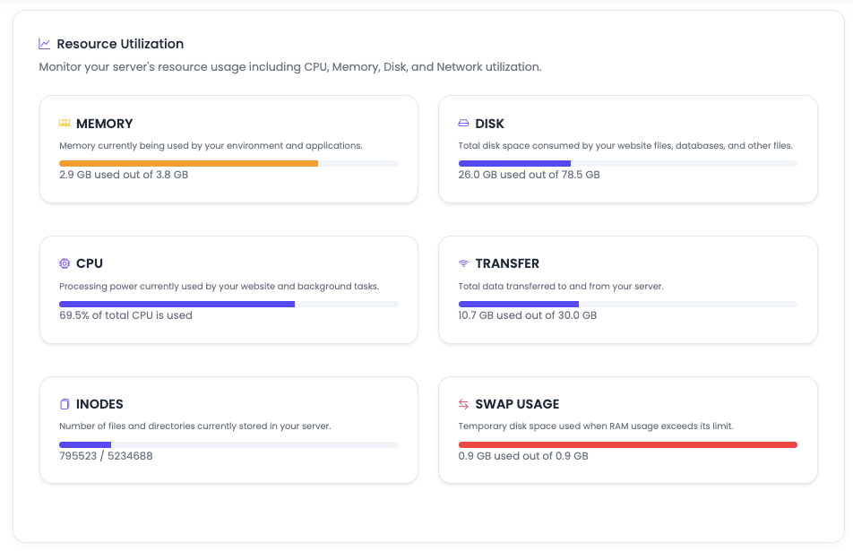

PostgreSQL Performance Tuning for App Developers

Your app was quick on day one. Now a page that loaded instantly hangs for a couple of seconds, and it's almost always the database. PostgreSQL performance tuning is the skill of finding out why, then fixing the real cause instead of guessing. This is the order of operations I'd hand a developer who owns a Django, Rails, Laravel, or Prisma app and just watched a query that flew at 10,000 rows fall over at five million: measure, index, keep autovacuum healthy, pool your connections, and only then reach for memory knobs or a bigger server.
Measure before you tune. Turn on pg_stat_statements to find your slowest queries, run EXPLAIN ANALYZE to see why they're slow, and add an index on the columns you filter and join on. Keep autovacuum running so dead rows don't pile up, pool your connections so Postgres isn't drowning in them, and resize the server only when the box is genuinely maxed. In that order.
Rule one: measure, don't guess
The most common tuning mistake is cheap to make. Someone reads that shared_buffers should be a quarter of RAM, changes it, restarts, and the slow page is still slow. They tuned a knob before knowing what was slow. Postgres will tell you which queries hurt, if you ask it.
Start with pg_stat_statements, a standard extension that records each query's total and average time, how often it ran, and how many rows it touched. It loads at server start, commonly set for you on a managed box, then you enable it and query it whenever a page feels slow.
-- enable once, then query it any time a page feels slow
CREATE EXTENSION IF NOT EXISTS pg_stat_statements;
SELECT query, calls, mean_exec_time, rows
FROM pg_stat_statements
ORDER BY mean_exec_time DESC
LIMIT 10;That's your ranked to-do list; the top query is where a fix buys the most. Sort by total time too (roughly calls times mean_exec_time) to catch the query that's quick on its own but runs ten thousand times a minute. Those add up to more pain than the slow report nobody runs.

Read the query plan with EXPLAIN and EXPLAIN ANALYZE
Now ask Postgres how it plans to run that query. EXPLAIN shows the plan and cost estimate without running it. EXPLAIN ANALYZE runs it and prints real timings and row counts beside the estimates. Use ANALYZE when you can: the gap between estimated and actual rows is usually the whole story.
One caveat: EXPLAIN ANALYZE runs the statement for real. On an UPDATE or DELETE, wrap it in a transaction and roll back, or you'll change data while only trying to look at it.
-- safe to inspect a write: it executes, then you undo it
BEGIN;
EXPLAIN ANALYZE UPDATE orders SET status = 'shipped' WHERE id = 42;
ROLLBACK;The distinction that matters most for app developers is a sequential scan vs index scan. A Seq Scan means Postgres read every row and threw away the ones that didn't match. Fine on a tiny table, brutal on a big one. An Index Scan means it used an index to jump straight to the matches.
Run EXPLAIN ANALYZE on a filter with no index and you'll see something like this:
EXPLAIN ANALYZE
SELECT * FROM orders WHERE user_id = 42 AND created_at > now() - interval '30 days';
Seq Scan on orders (cost=0.00..18334.00 rows=11 width=72)
(actual time=0.398..96.190 rows=11 loops=1)
Filter: (user_id = 42 AND created_at > (now() - interval '30 days'))
Rows Removed by Filter: 999989
Planning Time: 0.093 ms
Execution Time: 96.243 msRead it inside out. cost is the planner's estimate in arbitrary units, rows is how many it expected, actual time is real clock time, and loops is how many times the step ran. The line that jumps out is Rows Removed by Filter: 999989. Postgres read a million rows to hand you eleven. That's a missing index shouting at you.
Add the index, run the same EXPLAIN ANALYZE, and the plan changes shape:
Index Scan using idx_orders_user_id on orders
(cost=0.42..8.61 rows=11 width=72)
(actual time=0.028..0.041 rows=11 loops=1)
Index Cond: (user_id = 42)
Planning Time: 0.121 ms
Execution Time: 0.068 msSame eleven rows, but Postgres went straight to them. This is the highest-leverage move in Postgres query optimization, and it's why the method starts with measurement. You can't index what you haven't found.

The PostgreSQL performance tuning order of operations
Not every lever is worth the same. Some take five minutes and cut a query by 99 percent. Others take an afternoon and buy you 10. Here's how I rank them by payoff against effort, for an app not yet at web scale.
| Lever | What it fixes | Payoff vs effort |
|---|---|---|
| Add a missing index | Turns a full-table scan into a direct lookup | Huge payoff, low effort |
| Fix N+1 queries | Collapses hundreds of round trips into one | Huge payoff, low effort |
| Pool connections | Stops connection overload under real traffic | High payoff, low effort |
| Rewrite the worst queries | Reads fewer rows, drops bad joins and SELECT * | High payoff, medium effort |
| Keep autovacuum healthy | Prevents bloat and stale planner stats | Medium payoff, mostly leave it on |
| Tune work_mem per query | Speeds big sorts and hash joins | Medium payoff, needs care |
| Adjust shared_buffers / effective_cache_size | Better cache behavior and plan choices | Medium payoff, needs a restart and testing |
| Resize the server | More CPU and RAM for a genuinely maxed box | High payoff, costs money |
Look at the top and the bottom. Index first, touch shared_buffers last. Most of the slow Postgres I've looked at came down to a missing index or an N+1 loop, not hardware and not a config knob. Do only the top two rows and you'll fix most slow apps.
Indexes done right (an index isn't free)
An index is a sorted copy of one or more columns that lets Postgres find rows without reading the whole table. The default is a B-tree, and it's right for almost everything an app does: equality, ranges, ORDER BY, and most joins.
Add it without locking your table. A plain CREATE INDEX blocks writes until it finishes, which on a big live table means downtime. CREATE INDEX CONCURRENTLY builds it in the background without that write lock. It's slower and can't run inside a transaction, and the trade is usually worth it in production.
-- build on a live table without blocking writes
CREATE INDEX CONCURRENTLY idx_orders_user_id ON orders (user_id);
-- composite index: order matters. This serves
-- "a user's orders, newest first" and "just this user's orders"
CREATE INDEX idx_orders_user_created ON orders (user_id, created_at DESC);
-- partial index: only index the rows you actually query
CREATE INDEX idx_orders_open ON orders (user_id) WHERE status = 'open';A few things that trip people up:
- Composite column order matters. An index on
(user_id, created_at)helps a query that filters byuser_id, or filtersuser_idthen sorts bycreated_at. It does nothing for one that only filterscreated_at. Postgres reads a composite index left to right. - Partial indexes stay small. If you only ever query open orders, index only open orders. Smaller index, less to maintain, more of it stays in memory.
- Covering indexes skip the table. Add returned columns with
INCLUDEand Postgres answers from the index alone, an index-only scan. Great for a hot read.
Now the honest part: an index isn't free. Every INSERT, UPDATE, and DELETE updates every index on the table, so ten indexes mean each write does ten times the bookkeeping. They cost disk and memory too. Index what you filter and join on, not every column. Deeper mechanics are in database indexing explained.
Why is Postgres not using my index? Usually one of four reasons. Stats are stale, so run ANALYZE. You wrapped the column in a function like WHERE lower(email) = ..., which a plain index on email can't serve. The query returns a big fraction of the table, so a scan is genuinely cheaper and the planner is right. Or the types don't match. On a small table a Seq Scan really is faster, so trust the planner.
Autovacuum and bloat: leave it on
Postgres never overwrites a row in place. Because of how it handles concurrent readers and writers (MVCC), an UPDATE writes a new version of the row and marks the old one dead; a DELETE just marks it dead. Those dead rows, called dead tuples, sit in the table until something clears them. That something is autovacuum.
Autovacuum reclaims dead tuples so the table doesn't bloat, and refreshes the statistics the planner needs for good plans. Disable it because one vacuum caused a blip, and the table quietly bloats while the planner goes blind, so weeks later everything is slow for no obvious reason. Don't disable it. For a write-heavy table, make autovacuum run more often by lowering its scale factor instead of switching it off.
You can watch the damage build up:
SELECT relname, n_live_tup, n_dead_tup, last_autovacuum
FROM pg_stat_user_tables
ORDER BY n_dead_tup DESC
LIMIT 10;If n_dead_tup is a large share of n_live_tup and last_autovacuum is ancient, that table needs attention. After a big bulk load or a mass delete, nudge it by hand:
VACUUM ANALYZE orders;VACUUM ANALYZE reclaims space and refreshes stats in one go. Its heavy cousin VACUUM FULL rewrites the whole table and takes an exclusive lock, so save that for a real emergency, not a routine tune-up.

Connections and pooling
Every Postgres connection is a real operating-system process with its own memory. That's robust, but connections aren't cheap, and Postgres was never built for thousands of them. max_connections is finite, often near 100, and blow past it and you get the error everyone eventually meets:
FATAL: sorry, too many clients alreadyThe instinct is to raise max_connections. Resist it. More connections means more memory on idle processes, and it multiplies your worst-case memory because each connection can grab work_mem for every sort or hash it runs. The fix is Postgres connection pooling: a small, reused set of connections that many requests share.
Your framework probably already pools: Prisma, the pg Pool in Node, SQLAlchemy, and ActiveRecord all keep one. Set a sane pool size per app instance rather than a connection per request. Running many app servers or anything serverless? Put a dedicated pooler in front (PgBouncer in transaction mode is the usual pick), so thousands of clients funnel down to a handful of real connections. A classic start is roughly two times your CPU cores; most apps need far fewer than they reach for. More in database connection pooling.
Both of those settings, the connection string and the pool size, belong in environment variables rather than in your code, because the right pool size differs between your laptop and production. On Kloudbean they live in the console's runtime config, so you change the pool ceiling and restart without touching the repo or opening an SSH session.

Memory settings, carefully
These are the knobs people want to turn first and should turn last. On managed PostgreSQL the defaults already scale to your plan, so treat these as concepts you reach for when a query needs them, and a bigger plan raises the ceiling.
- shared_buffers is how much RAM Postgres uses for its own cache of table and index pages. About 25 percent of the server's RAM is the usual starting point. It needs a restart to change, so on a managed box the practical lever is your plan size.
- effective_cache_size isn't an allocation. It's a hint about how much memory (Postgres plus the OS cache) is likely available for caching. Set it realistically, often half to three quarters of RAM, and the planner leans toward index scans.
- work_mem is the memory a single sort or hash may use. The gotcha that burns people: it's per operation, per connection, not one global budget. One complex query can use several multiples of
work_mem, and every connection can do it at once. A generous globalwork_memtimes a few hundred connections is how you run a box out of memory.
So set work_mem modestly for everyone, then raise it just for the session that runs a heavy report:
-- bump it for this one big sort, not for the whole server
SET work_mem = '128MB';
SELECT ... -- the heavy analytical query
RESET work_mem;My honest take on work_mem shared_buffers and the rest: leave shared_buffers near the sensible default and change it last. You'll get more from one good index than from any memory knob you nudge.
When the honest fix is a bigger server
Sometimes the answer really is more hardware. If CPU sits pinned near 100 percent, RAM is exhausted so the cache can't hold your working set, or you're I/O bound after the queries are already tuned, the box is the bottleneck. On managed PostgreSQL you resize for more CPU and RAM without rebuilding anything, and backups and patching keep running.
You need two views side by side to make that call honestly: your pg_stat_statements output and the actual CPU and RAM on the box. Slow queries while CPU sits idle is a query or index problem, and a bigger server will not help. Pinned CPU after the queries are already tuned is the real signal to resize. Kloudbean's server health view is what I'd keep open next to the query stats, and vertical resize up is self-serve when the numbers say so. One caveat before you jump: scaling disk down again isn't supported, so grow deliberately rather than in a panic.

But tune queries and indexes first. Bad SQL scales badly no matter the hardware. A missing index that scans five million rows scans them faster on a bigger box, then falls over again at ten million. Doubling your server to hide an N+1 loop is the most expensive way to not fix a bug. For read-heavy workloads, a managed Redis cache in front of your hottest reads often buys more headroom than a bigger database.
Who owns each of these levers, you or your host?
Half the wasted time in a performance investigation comes from working the wrong side of this line. Someone opens a ticket about a slow query, or spends a week hand-rolling something the platform already does. So here's the split for the levers above, and it's a useful sanity check whoever you host with.
| The lever | Who owns it | What that means |
|---|---|---|
| A missing index | You | Nobody else can see your query patterns. This is the highest-payoff row in the article and it's entirely yours |
| N+1 query loops | You | An ORM decision inside your code. Invisible from outside the app |
work_mem for a heavy query | You | Set it per session around the query that needs it, then reset |
| Pool size | You | A number in your app config. The database can only refuse connections, not batch them for you |
shared_buffers baseline | Your host | Scaled to the plan and needs a restart. Practical lever is plan size, not the knob |
| Postgres and OS patching | Your host | On managed PostgreSQL this happens without you scheduling a maintenance window |
| Autovacuum running at all | Your host | On by default. Per-table scale factors for a write-heavy table are still yours |
| Backups existing | Your host | Automatic, plus on-demand when you want a point before a risky migration |
| Backups actually restoring | Shared | The platform takes them. Only you can run the test restore that proves they work |
| Provisioning and access control | Your host | Launch Postgres in the DBS section, one of seven managed engines, and whitelist your app server's IP so nothing else can connect |
| Deciding you need a bigger box | Shared | You read the numbers, the resize is a self-serve click, and the disk can't shrink afterwards |

Look at where the biggest wins landed. The two levers that fix most slow Postgres, the missing index and the N+1 loop, sit firmly in your column, and no host on earth fixes them for you. Kloudbean can't, and any platform that implies it can is selling you something. What managed hosting genuinely buys you is that the bottom half of that table stops consuming your attention, so the time you'd have spent on patching windows and backup scripts goes into EXPLAIN output instead.
One row deserves a nudge. Backups run automatically, but a backup you've never restored is a hope, not a plan. Take an on-demand backup before your next risky migration and restore it somewhere harmless once, so you know the mechanism works before you need it at 3am. Here's how server backups work. And if you're still wiring the app up, deploying a Node app to a managed cloud walks that path.
Managed, backed up, and still yours.
Seven managed engines, provisioned and patched for you, with access controlled and backups running automatically. Your schema, your queries, and your data stay exportable with the standard tools.
- ✓ Seven managed engines
- ✓ One-click launch
- ✓ Automatic backups
- ✓ Controlled access
- ✓ Standard connection strings
- ✓ Free migration assistance
FAQ
How do I find slow Postgres queries?
Enable the pg_stat_statements extension and query it, ordering by mean_exec_time for the slowest queries. Also sort by total time (calls times mean) to catch fast queries that run so often they add up. The top of that list is your ranked to-do list.
How do I read EXPLAIN ANALYZE?
Read the plan inside out. Compare the estimated rows to the actual rows, watch actual time for the real cost, and look for a Seq Scan on a big table or a large Rows Removed by Filter. A big estimate-versus-actual gap usually means stale stats or a missing index.
Why is Postgres not using my index?
Usually stale statistics (run ANALYZE), a function wrapped around the column that the index can't match, a query that returns a large fraction of the table so a scan is cheaper, or a type mismatch. On a small table a sequential scan is often fastest, and the planner is right to pick it.
What is autovacuum and should I disable it?
Autovacuum reclaims the dead rows that updates and deletes leave behind and refreshes the planner's statistics. Don't disable it. For a write-heavy table, make it run more aggressively rather than turning it off, because bloat and stale stats slow everything down.
How many connections can Postgres handle?
Each connection is a separate process, so the practical ceiling is in the low hundreds, and max_connections often defaults near 100. Use a connection pool so many requests share a small set of connections. A pooler like PgBouncer lets many clients funnel down to a few real ones.
Should I increase shared_buffers?
Usually not first. A common start is about 25 percent of RAM, and changing it needs a restart. You'll almost always get more speed from the right index than from raising shared_buffers, so index first and tune memory later.
Do I need CREATE INDEX CONCURRENTLY?
On a live table, yes. A plain CREATE INDEX locks the table against writes until it finishes, causing downtime on big tables. CREATE INDEX CONCURRENTLY builds it in the background without that lock. It's slower and can't run in a transaction, and that trade is worth it in production.
Is a sequential scan always bad?
No. On a small table, or when a query legitimately returns a large share of rows, a sequential scan beats bouncing through an index. It's only a problem when Postgres reads far more rows than it returns on a big table, which signals a missing index.